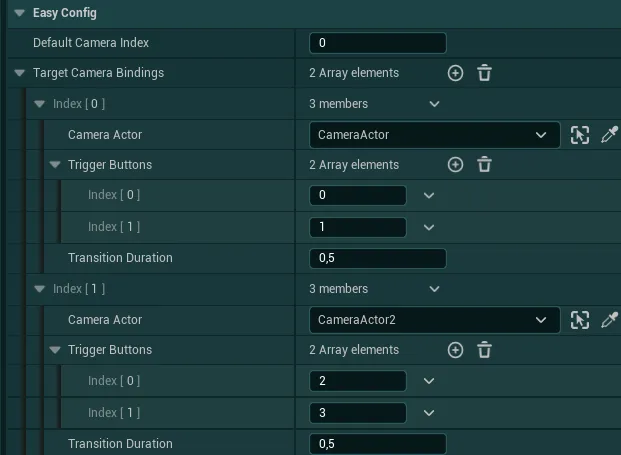

主菜单与开场界面¶
主菜单设置¶
要让主菜单正常工作，必须将一些系统添加到你想用作主菜单的关卡中。如果你想查看示例设置，请查看 EasyGameUI/Maps 文件夹中的 L_EGUI_MainMenuDemoLevel 关卡
-
首先，你可以打开想用作主菜单的关卡，也可以复制已有任意关卡或新建关卡，来使用一个全新的关卡
该关卡应尽可能轻量，以便在游戏启动时快速加载。如果你不希望主菜单显示 3D 世界，请移除关卡中的所有对象，使其保持空白。
-
然后，在你的项目设置（Project Settings）中，确保在
Map & Modes类别下将此关卡设置为Game Default Map
-
你还需要在 Global Config Data Asset 的
Main Menu Level设置中引用此关卡 -
然后，如果你希望拥有世界的 3D 视图，请在世界中至少放置一个摄像机（CameraActor 或 CineCameraActor）。你可以按需放置任意数量的摄像机，下方有关于如何使用它们的进一步说明。

-
关卡准备就绪并被引用后，前往
EasyGameUI/EasySystemMenus文件夹，找到BP_EasyMainMenuController，并将其放置在关卡中的任意位置 -
然后，如果你有摄像机需要设置，请选择刚刚放置的
BP_EasyMainMenuController并进入细节面板（Details Panel）。找到Target Camera Bindings变量，并按照你希望拥有的摄像机数量添加对应条目。
对于每个摄像机，你可以指定主菜单中的哪些按钮会“触发”视点切换到指定摄像机。
在此示例中，前 2 个按钮将触发第一台摄像机，按钮 2-3 将触发摄像机 2，依此类推。你还可以指定切换到给定摄像机时的过渡持续时间。 -
最后，你可以通过
New Game Level变量更改玩家点击“新游戏”按钮时默认加载的地图引用


你现在已经完成了基础主菜单的设置。如果你想编辑 Easy Main Menu 控件，可以在 EasyGameUI/EasySystemMenus 文件夹中找到它。你还可以通过 Global Styling system 更改显示的徽标
开场界面设置¶
开场界面可以在显示主菜单之前自动生成，只需满足几个条件即可正常工作：
- 你的主菜单关卡必须按前面所述进行设置
-
Global Config 变量
Intro Screen Widget必须定义为所需的控件如果控件引用为空或无效，系统将跳过显示开场界面控件，直接进入主菜单（因此，如果你不需要此开场界面，只需从配置中移除该控件引用）
-
如果你为开场界面使用自定义控件（而非默认提供的控件），该控件必须是
WBP_EasyMasterWidget的子级（更多细节见 UI 导航系统部分）
最后，你可以通过 Global Config 变量 Play Intro Credits On Game Launch? 在启动时启用游戏制作人员名单。
要配置开场制作人员名单，你只需在 Global Config 中定义一个名为 Intro Credits 的制作人员名单上下文，更多设置说明可在 游戏制作人员名单部分 中找到
补充指南¶
禁用主菜单按钮
- 如果你想禁用主菜单中的按钮，请打开
Easy Main Menu控件 -
然后在
Hierarchy面板/选项卡中，在ButtonsContainer面板下选择要禁用的按钮 -
接着，在
Details面板中，将Fully Disable Button?变量设置为 True -
如果你还想禁用该资源的整个功能，请查看 Global Config 变量，大多数系统都可以在那里禁用。


显示静态背景图片而非 3D 世界
- 如果你希望用静态背景图片代替 3D 世界作为主菜单背景，请打开
Easy Main Menu控件 -
然后在
Hierarchy面板/选项卡中找到BackgroundImage控件并点击它 -
接着，在
Details面板中找到Easy Config部分，在这里你可以添加背景图片并调整背景的任何设置
-
如果你希望在 3D 世界前方叠加一张图片，显然也可以将此与 3D 世界背景结合使用